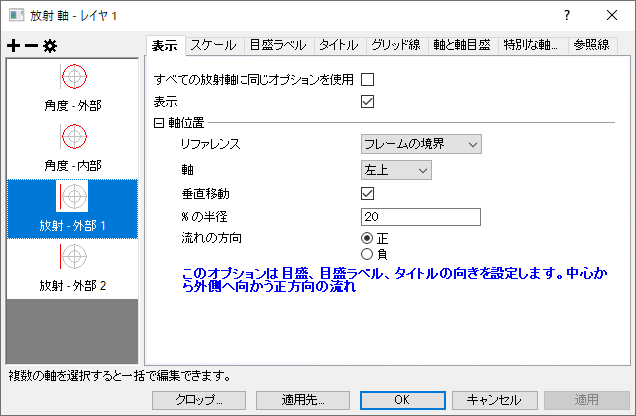
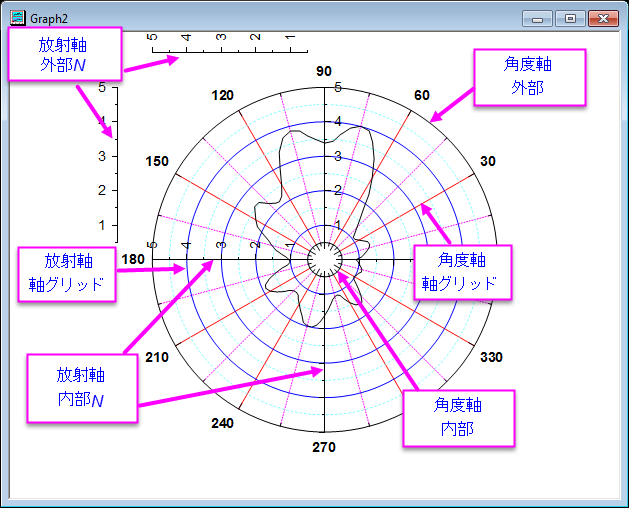

Origin 2023より、放射軸（角度軸ではなく）の軸線の端点はデフォルトで正方形になり、システム変数@LCALによって制御されます。
Originの極座標グラフは、角度軸と放射軸と表示できます。内部と外部に2つの角度軸が存在します。デカルト直交座標の軸が編集可能なように、これらの軸も表示/非表示などの編集が可能です。放射軸は、プロットに対して内部または外部表示にすることができます。放射軸も同様に編集可能です。軸の編集は極座標グラフの軸ダイアログから行います。以下の上の図が軸ダイアログで、複数内部、外部放射軸の表示を制御します（例：内側の軸 1, 外側の軸 2）。下の図は、Originの極座標グラフの軸とグリッドの種類と場所を示しています。
|  |
| 極座標向けの軸ダイアログ |
|  |
| 極座標の軸の専門用語 |
軸ダイアログは、極座標の軸を編集するタブベースのダイアログです。ダイアログには、7つのタブが用意されており、それぞれで異なる軸の属性を制御します。このダイアログを使用するにあたって、基本的には最初に左パネルで1つ以上のアイコンを選択します（複数のアイコンを選択するにはCtrlキーを押します）。このアイコンは、編集を行う軸を示しています。そして、右パネルでタブを開き、軸の属性を編集します。
角度軸は値の軸です。これらは円（または、円の一部）として表示されます。外側と内側の方位軸が存在し、内側/外側の方位軸はそれぞれ放射軸の開始/終了の値の位置から開始します。
| 外と内で同じオプションを使用する | 角度軸の外側と内側に同じ軸の設定を使用するか指定します。 |
|---|---|
| 表示 | 選択した軸を表示するかどうかを指定します。 |
| 向き | 表示する角度軸の方向と軸の開始値を指定します。
|
このタブでは、軸範囲と増分を制御します。ほとんどのコントロールは、一般的な2D軸ダイアログのスケールタブと同じです。単位定義 ノードだけ極座標軸ダイアログ固有の設定項目です。
| 単位 | 角度軸の表示単位を指定します。
|
|---|---|
| 円開始値 | これは、単位に対してカスタムが選択されているときのみ利用できます。これはカスタム単位の開始値を指定するために使用します。この値は単位が変換された時に自動的に0度に換算されます。 |
| 円終端値 | これは、単位に対してカスタムが選択されているときのみ利用できます。これはカスタム単位の終端値を指定するために使用します。この値は単位が変換された時に自動的に360度に換算されます。 |
このページ内の他のコントロールについては、一般的な2D/3D軸ダイアログのスケールタブを参照してください。
| Notes: もしユーザ定義で選択した単位の軸範囲（開始から終了までの範囲）が１ピリオド（開始値と終端値までの範囲）を超えるか同じだった場合、軸の範囲は自動的にデフォルト設定である全ピリオド範囲になります。また、開始から終了までの値の絶対値が開始値と終端値の絶対値より大きい場合、軸範囲は円開始値と円終端値の範囲内で収まるように移動します。 |
外側にある角度軸の目盛ラベルについて、このタブで編集できます。
| 表示 | 選択した内部軸の副ラベルを表示するかどうかを指定します。 |
|---|---|
| 内側と外側で同じオプションを使用する | 角度軸の外側と内側に同じ目盛りラベルの設定を使用するか指定します。 |
表示 のサブタブは、目盛ラベルの表示を制御します。ほとんどのコントロールは2Dグラフの軸ダイアログと同じです。角度軸の編集のために、いくつかの特殊なオプションがあります。
| タイプ | 目盛ラベル表示のタイプを決定します。詳細はタイプドロップダウンメニュー項目のレファレンスを参照してください。 |
|---|---|
| 表示 | これは、タイプがデータセットからのテキスト、主目盛ラベル用データセット、カテゴリにセットされると使用できません。
目盛ラベル表示のタイプを決定します。詳細は表示フォーマットドロップダウンメニュー項目のレファレンスを参照してください。 |
| データセット名 | これはタイプがデータセットからのテキスト、主目盛ラベル用データセット、カテゴリにセットされるときのみ選択できます。
目盛ラベルで使用するデータセットを指定します。詳細はデータセット名ドロップダウンメニューのレファレンスを確認してください。 |
| 小数点以下の桁数の設定 | このチェックボックスは、タイプで数値を選択したときのみ利用可能です。
目盛ラベルの小数点位置を設定するか指定します。 |
| 小数点桁数 | タイプが数値で、小数点以下の桁数の設定チェックボックスが選択されたときに利用可能です。 |
| 正として負のラベルを表示 | このチェックボックスは、タイプで数値を選択した時のみ利用可能です。
これは負の値である場合の目盛ラベルを正の値で表記するか指定します。 |
| ラベル形式 | 目盛ラベルの表示単位を指定します。
|
| 割る値 | これは一般的な2D軸ダイアログのコントロールです。詳細は、このヘルプファイルをご覧ください。 |
| 数式 | これは一般的な2D軸ダイアログのコントロールです。詳細は、このヘルプファイルをご覧ください。 |
| ラベル接頭語 | これは一般的な2D軸ダイアログのコントロールです。詳細は、このヘルプファイルをご覧ください。 |
| ラベル接尾語 | これは一般的な2D軸ダイアログのコントロールです。詳細は、このヘルプファイルをご覧ください。 |
列のデータ型タブは目盛ラベルの型式について制御します。このコントロールは一般的な2Dグラフ の軸ダイアログのフォーマットタブと設定と同じですが、テキストの折り返しオプションはありません。
副目盛ラベルタブは、副目盛のラベルを編集するときに使用します。このコントロールは一般的な2D軸ダイアログの副目盛ラベルタブとほぼ同じです。
このタブは放射軸のタイトルを制御するのに使用します。
表示チェックボックスは特定の放射軸のタイトルを表示するかどうか指定します。
他の項目は一般的な2D軸ダイアログのタイトルページと同じです。
このページでは、角度軸のグリッド線の編集オプションが提供されます。
主グリッド線と副グリッド線ツリーノードを使って主目盛と副目盛のグリッド線も制御できます。ほとんどの項目は一般的な2D軸ダイアログの主グリッド線ツリーノードと同じです。
追加の線ツリーノードは、反対の線および指定した角度値での線を表示するために使用します。
| 反対 | 内部角度軸の位置に反対の線を表示するか指定します。 |
|---|---|
| Y = | Y=チェックボックスにチェックを付けて、ボックスに値を入力して、指定した角度値での線を追加します。 |
このタブは、極座標グラフの角度軸の軸と軸目盛スタイルを制御します。
軸と軸目盛ページでは、3つのチェックボックスがあり、全体的な軸と軸目盛のオプションを選択できます。
| 軸と軸目盛を表示 | 選択した角度軸に軸と軸目盛を表示するか指定します。 |
|---|---|
| 内側と外側で同じオプションを使用する | このチェックボックスにチェックを付けると、外側と内側の角度軸に同じ軸と軸目盛を適用します。このチェックボックスにチェックを付けると、内部軸上の軸と軸目盛を表示チェックボックスがグレーアウトし、自動的に外部軸上の軸と軸目盛を表示と同じになります。 |
線ツリーノードは線のスタイルをカスタム化できます。
| 表示 | このチェックボックスを選択して、選択されている軸の線を表示します。 |
|---|---|
| 色 | ドロップダウンリストから色を選択または定義して、軸の線や目盛を表示する色を指定します。 |
| 太さ | 軸および目盛の線の太さ(ポイント単位、1ポイント＝1/72インチ)を入力または選択します。 |
| 軸オフセット | 対応する角度軸のオフセットを設定します。
|
| パーセント/値 | この入力ボックスは軸オフセットが% 最初からまたは位置=にある時だけ使用できます。これは、軸のオフセットのパーセント/値を定義するために使用します。% 最初からが選択されている場合、パーセンテージを入力します。正負両方のパーセンテージを入力可能です。位置=が選択されている場合、その値は度数軸上の適当な数を入力します。 |
目盛ツリーノードは目盛の方向と長さをカスタム化できます。このオプションは、一般的な2D軸ダイアログの主目盛/副目盛ツリーノードとほぼ同じです。
一般的な2次元座標グラフと同様に、参照線タブで角度軸に参照線を追加することが出来ます。
このオプションについては、一般的な座標での参照線タブ をご参照ください。
放射軸では、参照線は円または開始値から終了値までの角度の部分円になります。
角度軸の特定の位置に特別な軸刻みラベルを複数個追加できます。
| 内部と外部で同じオプションを使用する | このチェックボックスにチェックを付けると、外部と内部の方位軸に同じ目盛オプションを適用します。 |
|---|
このページでは、特別な軸刻みとページで表示するように選択している場合に外部角度軸の特別な目盛のスタイルをカスタム化できます。このオプションは、一般的な2D軸ダイアログの特別な軸刻みノードとほぼ同じです。
極座標グラフの内側や外側に配置可能です。内部軸は中央から始まり、内部 n と名付けられます。外部軸は極座標グラフの外側に描かれ、 外部 n と名付けられます。
角度軸のすべての主目盛に放射状の軸を追加し、それらをすべて同時にカスタマイズすることができます。
放射軸ページでは、2つの方法で最初の放射軸の設定を指定できます。
このダイアログは素早く全ての放射軸の設定を行うために使用できます。新しい放射軸設定が適用されると、それまでの放射軸設定は消去されます。
このダイアログでは極座標内の軸と極座標外の軸が異なるノードで制御されます。
| 極座標図内の軸 | このチェックボックスは極座標図内部に放射軸を表示するか指定します。これが選択されていない場合、このツリーノード内にある他のコントロールは全て選択できなくなり、極座標図内に放射軸は表示されません。つまり、内部軸は無くなります。 |
|---|---|
| 位置の種類 | 全ての内部軸の位置の種類を定義します。
|
| 角度リスト | このドロップダウンリストは位置の種類で角度のラジオボタンが選択されている時に使用できます。放射軸の位置について、組み込みで設定できるリストを選択しても、カスタムを選択してユーザ定義の角度リストを値（角度軸単位）入力ボックスに作成しても構いません。 |
| 値 (角度軸単位 ) | この入力ボックスは角度リストに対してカスタムが選択されているときのみ利用できます。角度軸単位 は、角度軸のスケールタブで定義された単位に対応しています。放射軸の位置を1つ以上の角度を角度軸に対して入力します。スペースを区切り文字として使用します。 |
| 時計リスト | このドロップダウンリストは位置の種類で時計のラジオボタンが選択されている時に使用できます。組み込みの時計リストから放射軸の位置を選択します。 |
このツリーノードの中には4つのドロップダウンリスト、左、 右、上、下があります。それぞれ、対応する枠の境界に軸を表示するかどうか指定します。例えば、左のドロップダウンは左側の枠の境界線に放射軸を置くか指定します。
これらのドロップダウンリストは同じようなオプションを有しています。
| なし | この枠の境界線には放射軸を表示しません。 |
|---|---|
| 上部または左 | (左と右には)上部または(上と下には)左にのみ、この枠境界に放射軸を表示します。 |
| 下部または右 | (左と右には)下部または(上と下には)右にのみ、この枠境界に放射軸を表示します。 |
| 上部と下部または左右 | (左と右には)上部と下部、または(上と下には)左右の両方に、この枠境界に放射軸を表示します。 |
それぞれのドロップダウンリストではなしが選択されていないかぎり、追加の入力ボックスである%sの半径があります。ここに値を入力して、この放射軸に垂直な半径線の終了位置に対して、対応する放射軸のオフセットを定義できます。
外側の軸 n または 内側の軸 n ページでは、放射軸を表示するか、表示するならどこに表示するかという内容を設定できます。
表示チェックボックスはその放射軸を表示するかどうか指定します。
軸位置ツリーノードは選択した放射軸をどこに表示するか指定します。
| リファレンス | このドロップダウンは、極座標グラフの内側または外側に放射軸を表示するかどうかを決定するために使用され、内側の軸については、リファレンスとして角度軸または時計方向を使用するかどうかを決定するために使用されます。
|
|---|---|
| 角度 | このドロップダウンはリファレンスで角度軸が選択されている時のみ表示されます。これは軸の位置を角度で指定します。
|
| 値 (度 ) | この入力ボックスは角度のドロップダウンリストで％開始角度からまたは％終了角度からまたは角度が選択されている場合のみ表示されます。角度軸単位 は、角度軸のスケールタブで定義された単位に対応しています。
|
| 時計 | このドロップダウンメニューはリファレンスで時計目盛板のラジオボタンが選択されている時に使用できます。これには4つのオプション、3時、6時、9時、12時があります。この軸位置は角度軸によって変更されません。 |
| 軸 | このドロップダウンメニューはリファレンスでフレームの境界のラジオボタンが選択されている時に使用できます。これには8つのオプションがあり、フレーム外側の特定の位置に放射軸を配置します。 |
| 垂直移動 | このチェックボックスにチェックを付けると、垂直方向にオフセットします。 |
| % の半径 | この入力ボックスは、垂直移動を選択した時のみ利用可能です。この値は放射軸のパーセントオフセットを定義します。これは、放射軸設定ダイアログの放射％と同じように設定します。 |
| 流れの方向 | このオプションは目盛、目盛ラベル、タイトルの向きを指定します。角度軸の向きと放射軸のリファレンスタイプに応じます。現在の設定の下の、正の流れ方向を示すダイアログにヒントが提供されます。「負」は、単に「正」と方向が逆になります。 |
このページは、全ての放射軸の軸の範囲、軸のタイプ、刻みの位置等をコントロールできます。この内容は基本的に一般的な2D軸ダイアログのスケールタブと同じですが、1つだけ極座標の放射軸にのみにあるチェックボックスがあります。
| 中心の価(%) |
開始値から中心への距離を指定するには、開始値から終了値までの距離のパーセント値を入力します。 例えば、放射軸が50 から100の距離で40を中心に置きたい場合、このようにパーセント値を入力します。： デフォルトでは、0に設定されています。このチェックボックスにチェックがついている場合、極座標グラフの中心は放射軸の開始がどのような値であっても原点(r=0)に固定されます。 |
|---|
Note:
以下の円形の樹形図を参照してください。
このタブでは、特定の放射軸の目盛ラベルを編集できます。
| 表示 | このタブでは、目盛ラベル表示のコントロールが利用可能です。これは、標準的な2Dグラフ軸ダイアログの目盛りラベルの表示フォーマットコントロールと同じです。 |
|---|---|
| フォーマット | このタブでは、目盛ラベルフォーマットの編集が可能です。これは、一般的な2Dグラフの軸ダイアログのフォーマットタブと設定と同じですが、テキストの折り返しオプションはありません。 |
| 副目盛ラベル | このタブは、副目盛のラベルを編集するときに使用します。このコントロールは一般的な2D軸ダイアログの副目盛ラベルタブとほぼ同じです。 |
このタブは放射軸のタイトルを制御するのに使用します。
表示チェックボックスは特定の放射軸のタイトルを表示するかどうか指定します。
他の項目は一般的な2D軸ダイアログのタイトルページと同じです。
このページは放射軸のグリッド線をカスタムするオプションを提供しています。つまり、角度軸に対して平行に並ぶ円の事です。
主グリッドと副グリッド線はそれぞれ主グリッド線と副グリッド線のツリーノードで編集できます。これら2つのツリーノードは対応する一般的な2D軸ダイアログの グリッド線タブと同じです。
このタブでは、角度軸の線と軸目盛のスタイルを編集します。
表示チェックボックスは特定の放射軸の軸と軸目盛を表示するかどうか指定します。
他の項目は一般的な2D軸ダイアログの軸と軸目盛ページと同じです。
Origin 2023より、放射軸（角度軸ではなく）の軸線の端点はデフォルトで正方形になり、システム変数@LCALによって制御されます。 |
一般的な2次元座標グラフと同様に、参照線タブで放射軸にも参照線を追加することが出来ます。
このオプションについては、一般的な座標での参照線タブ をご参照ください。
放射軸では、参照線は円または開始値から終了値までの角度の部分円になります。
このタブでは、放射軸の特殊ラベルの追加/削除/編集を行います。
他の項目は角度軸の特別な軸刻みページと同じです。
Crop ボタンをクリックして、その他 ダイアログを開きます。この四角形で定義された範囲外のグラフは切り落とされます。
| 有効にする | このチェックボックスにチェックすると、切り抜きが有効になります。このチェックボックスが選択されないと、このページの他の項目はアクティブになりません。 |
|---|---|
| 単位 | 四角形の大きさを定義する単位を選択します。
|
| 左 | この入力ボックスは四角形の左側の線の位置を指定します。 |
| 上 | この入力ボックスは四角形の上側の線の位置を指定します。 |
| 幅 | この入力ボックスは四角形の幅を指定します。 |
| 高さ | この入力ボックスは四角形の高さを指定します。 |
適用先 ボタンをクリックして、適用先 ダイアログを開きます。このダイアログは、軸ダイアログ下部にある、適用先ボタンをクリックすると開きます。目盛ラベルや軸と軸目盛、グリッド線のフォーマットを指定して、ソース軸から他の軸に適用できます。
このページは一般的な2D軸ダイアログのその他へ適用ページと同じように作用します。